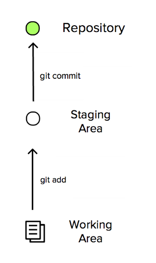

En primer lugar, crearemos una carpeta donde configuraremos nuestro ambiente Git, para esto haremos lo siguiente
1-Iniciar Git en nuestra carpeta de proyecto con
2-Identificarnos, para que los cambios salgan a nuestro nombre.
podemos ver que todo salió bien con
3-Crear el repositorio en gitHub.
4-usar git remote para conectar repositorios locales(como el archivo de tu proyecto en tu pc) y remotos(tu repo en git)
Es necesario tener en consideración como nos autenticaremos para luego poder hacer push, hay dos maneras. Una es a través de SSH con el comando
Y la otra a través de HTTPS con el comando
si nos conectamos a través de SHH debemos hacer la siguiente configuración.
Crear la llave SSH guardándola en su lugar por defecto y dejado la clave vacía, (enter enter enter)
luego les saldrá la huella digital y luego debemos tomar la llave publica y ponerla en GitHub en nuestro usuario. con es podemos ya trabajar en cualquier repo, si usamos otro pc después debemos repetir esto y agregar a nuestro usuario otra llave mas.
$ls
Si nos conectamos mediando HTTPS git nos pedira pedirá loguearnos con nuestro usuario GitHub
5-Ponermos nuestro asset de nuestra pagina en la carpeta y subimos los archivos con el comando
Explicación de los comandos
git init
Es lo primero que tienes que hacer antes de empezar a trabajar por primera vez dentro de tu carpeta.
Este comando inicia un nuevo repositorio de Git. Esto permite que Git empiece a rastrear al repositorio con todos los cambios que hagas dentro.
git config
Configura todas las opciones que puedes hacer con GIT.
git remote
Es un comando que te permite conectar un repositorio locales y remotos.
Un administrador de conexiones, en definición sencilla.
En lugar de poner constantemente la URL para realizar los comandos de “fetch”, “pull”, y “push”, sólo le asignamos un nombre y podemos llamar esa conexión de manera rápida.
git remote add [“nombre del remoto"]* Por defecto, se llama “origin”.
git add
Mueve todos los cambios del “Working Directory” al “Staging Area”. Esto da la oportunidad de preparar los archivos antes de realizar la confirmación con el “commit” a la historia principal del proyecto. El comando es: git add [nombre del archivo] -> Agrega el cambio ó creación del archivo de manera individual. git add . -> Agrega los cambios de todos los archivos, pero no los nuevos creados ó nuevos eliminados.git add -A -> Agrega los cambios los archivos, incluidos nuevos creados ó nuevos eliminados.
git commit
Inserta el conjunto de archivos que se encuentra en el "Staging Area” y los colocan en el repositorio. Cada “set” de archivos insertados en la historia del proyecto se la llama “commit”. Combinado con git add, ese define el proceso básico de GIT. git commit -m [nombre del título del commit]
git push
“Pushing” es el opuesto a “fetching”. Te permite mover una rama local a otro repositorio, que usualmente es la forma de publicar contribuciones, en un servidor remoto. Se pueden enviar muchos commits al mismo tiempo, no sólo uno. git push [nombre del remoto] [nombre de la rama]
